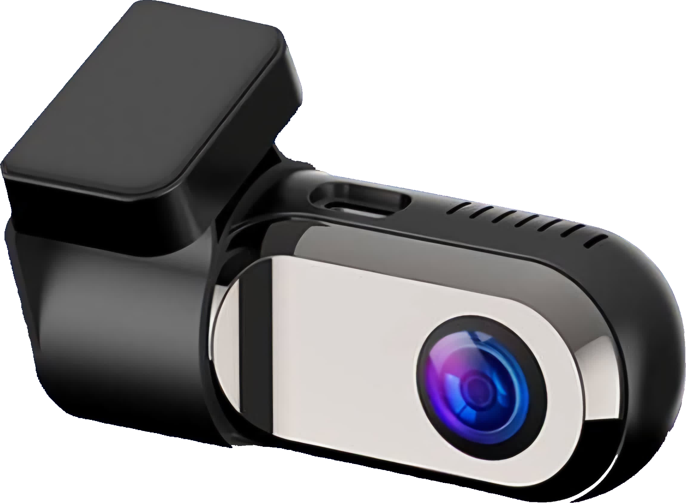
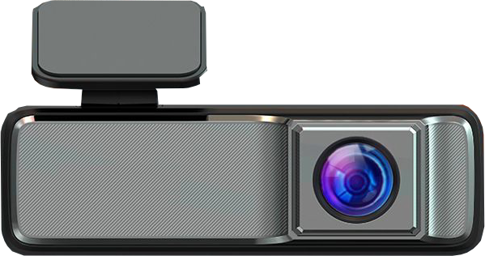
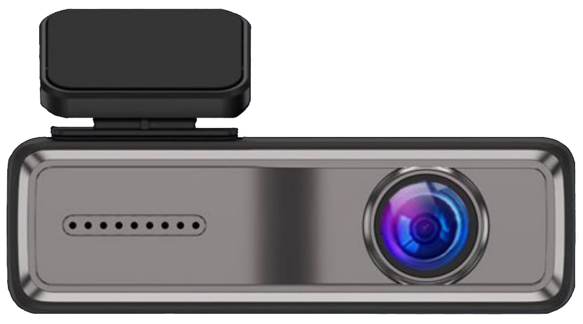
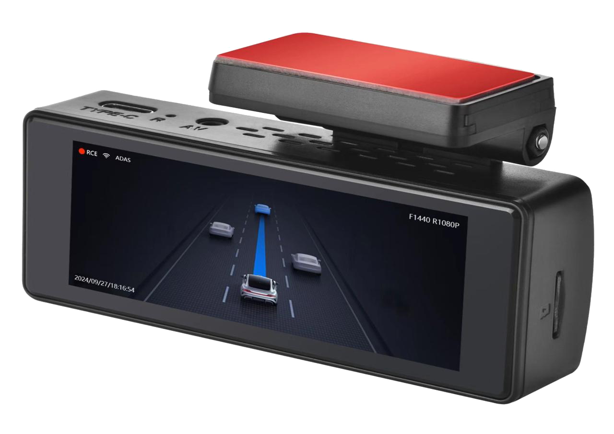
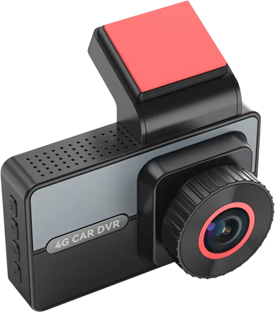
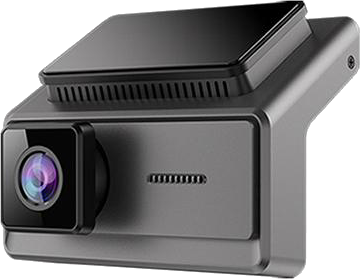
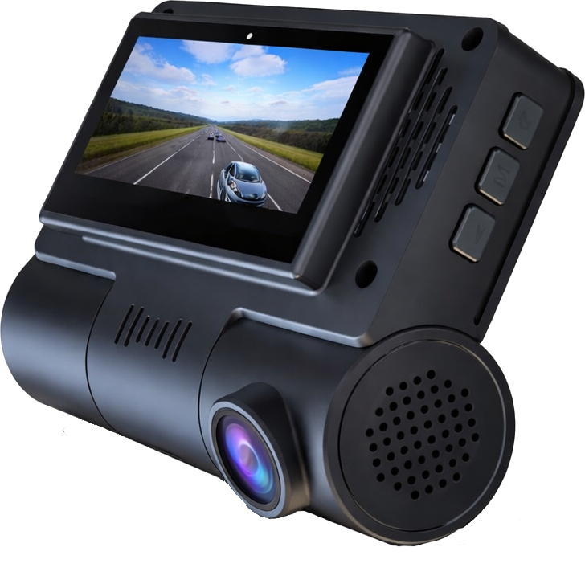

Trafy
Güvenli ve net bir sürüş deneyimi için şık, gelişmiş araç içi kameralarımızla tanışın.

Trafy Uno
Fiyat/Performans Ürünü
Şehir içi sürücüler için özel 1080P çözünürlük, 120° geniş açı ve ADAS destekli güvenlik.
Başlangıç fiyatı: 1500 TL

Trafy Uno Pro
Profesyonellerin Tercihi
Profesyonel sürücüler için 1080P UHD, WiFi bağlantısı ve süper gece görüşü
Başlangıç fiyatı: 2500 TL

Trafy Dos
2K Ön + Arka Kamera
1440P ön kamera, gece görüşü ve Extreme Mode ile hem gündüz hem gece üstün performans.
Başlangıç fiyatı: 4000 TL

Trafy Dos Pro
4K + GPS + Ekran
4K çözünürlükte ön kamera, 1080P arka kamera, dahili GPS ve ekran ile her detayı kayıt altına alın.
Başlangıç fiyatı: 7000 TL

YeniTrafy Dos Internet
Bulut Bağlantılı + 4G LTE
4G LTE bağlantısı ile bulut depolama, uzaktan canlı izleme ve anlık bildirimler.
Başlangıç fiyatı: 8000 TL

Trafy Tres
3 Açıda Tam Koruma
2K ön kamera, 1080P iç ve arka kameralarla tam kapsamlı kayıt. 512GB’a kadar desteklenen dev hafıza ile her anı yakalayın.
Başlangıç fiyatı: 9000 TL

Trafy Tres Pro
Yeni4K + WiFi + GPS + Ekran
4K ön kamera, 1080P iç ve arka kameralarla tam kapsamlı kayıt. WiFi, GPS ve 3.16" IPS ekran ile profesyonel kayıt deneyimi.
Başlangıç fiyatı: 10000 TL
1080P Full HD Video
1080P çözünürlük ile gündüz ve gece net kayıt performansı.
140° Geniş Açı Lens
140° geniş görüş açısı ve F2.0 diyafram açıklığı ile detaylı kayıt.
WiFi ve Mobil Uygulama
WiFi üzerinden canlı önizleme, video indirme ve paylaşım özellikleri.
128GB'a Kadar MicroSD Desteği
64GB hafıza kartı ile 12 saat kayıt kapasitesi.
ADAS Sürüş Destek Sistemi
Öndeki araç mesafe algılama, çarpışma uyarısı, yaya çarpışma uyarısı ve şerit takip.
Otomatik Döngüsel Kayıt
Açılışta otomatik kayıt başlatma ve döngüsel kayıt ile kesintisiz kullanım.
Çarpışma Algılama (G-Sensör)
Çarpışma anında otomatik video kilitleme ile önemli kayıtları koruma.
Mobil APP ile Fotoğraf Çekimi
Mobil uygulama üzerinden fotoğraf çekme ve kayıt kontrolü.
Ses Kaydı Desteği
Video kayıtlarında ses kaydı özelliği ile tam kayıt deneyimi.
Metal Gövde ve Cam Lens
Dayanıklı metal gövde ve cam lens ile üstün kalite ve uzun ömür.
Lingtong İşlemci
Güvenilir Lingtong çipset ile stabil performans.
USB/Type-C Veri Aktarımı
Standart USB veya Type-C kablo ile kolay veri aktarımı.
Düğme Pil Sistemi
Düğme pil ile ayar ve saat bilgilerini koruma.
Trafy Uno, Lingtong işlemci ile donatılmış, 1080P çözünürlüklü, WiFi bağlantılı ve ADAS sürüş destek sistemli fiyat/performans şampiyonu bir araç içi kameradır. 140° geniş açı, metal gövde ve cam lens ile hem şehir içi hem de uzun yol sürücüleri için ideal çözüm.
Ürün kutusunda: Kamera, bağlantı kablosu ve kullanım kılavuzu bulunmaktadır.
1080P UHD Video Kalitesi
Gündüz, gece ve zorlu koşullarda net ve canlı kayıt deneyimi.
WiFi Bağlantısı ve Mobil Kontrol
10 metreye kadar kablosuz erişim ve mobil uygulama üzerinden kontrol kolaylığı.
Süper Gece Görüşü
Düşük ışıkta bile detaylı ve net kayıt performansı.
Otomatik Döngüsel Kayıt
Eski videoları silerek yeni kayıt alanı açan akıllı sistem.
G-Sensörü
Darbe algılayarak video koruma ve park halindeyken güvenlik sağlama.
ADAS Sürüş Destek Sistemi
Öndeki araç hareketi, takip mesafesi ve şerit dışı uyarılarla akıllı sürüş desteği.
1296P / 1080P Seçilebilir Video Çözünürlüğü
İhtiyacınıza uygun çözünürlük ayarlarıyla esnek kullanım.
160° Ultra Geniş Görüş Açısı
Daha geniş sahaları kaydederek daha fazla alanı kapsayan koruma.
64GB - 256GB MicroSD Kart Desteği
Uzun süreli kayıtlar için büyük hafıza seçenekleri.
Metal Gövde ve Cam Lens
Üstün malzeme kalitesi ile dayanıklılık ve netlik bir arada.
USB Güç Desteği (5V, 1A)
Kolay ve güvenli enerji bağlantısı.
30 FPS Kayıt Hızı
Pürüzsüz ve net görüntü akışı.
3.2 Metre Uzunlukta Kablo
Kolay montaj ve rahat kurulum için ideal uzunluk.
2 Yıl Garanti
Trafy kalitesi ve destek güvencesiyle içiniz rahat olsun.
Trafy Uno Pro, yalnızca ön görüntü kaydı yapmak isteyen kullanıcılar için geliştirilen, yüksek performanslı ve ileri teknolojilerle donatılmış bir araç içi kamerasıdır. Trafy Uno'nun gelişmiş versiyonu olan Uno Pro, daha geniş açı, daha net görüntü, daha akıllı özellikler ve daha fazla güvenlik sunar.
Ürün kutusunda: Kamera, bağlantı kablosu ve kullanım kılavuzu bulunmaktadır.
Ultra Net 2K Görüntü Kalitesi
1440P çözünürlük ve çift kamera kaydı ile her anı detaylı şekilde kaydedin.
WiFi Bağlantısı ve Mobil Uygulama
Canlı izleme, video indirme ve anında paylaşım kolaylığı.
Geliştirilmiş Gece Görüşü
Düşük ışık koşullarında bile net ve detaylı kayıt.
Aşırı Hava Modu
Yağmur, kar ve zor hava şartlarında kesintisiz kayıt güvencesi.
Görüntü Sabitleme ve Yavaş Çekim
Sarsıntısız kayıtlar ve olağanüstü detaylar için yavaş çekim modu.
Otomatik Döngüsel Kayıt
Eski kayıtları silerek sürekli yeni kayıt alanı açar.
24 Saat Park Gözetimi
Park halindeyken darbe algılayarak otomatik kayıt yapar ve koruma sağlar.
G-Sensör Destekli Çarpma Algılama
Çarpışmaları algılayarak önemli videoları otomatik koruma altına alır.
140° Geniş Lens Açısı
Ön ve arka kameralarla geniş sahaları detaylı olarak kaydeder.
Metal Gövde ve Cam Lens
Yüksek dayanıklılık ve optik netlik sunan üst düzey malzeme kalitesi.
3.5 Metre Uzunlukta Kablo
Ön ve arka kameralar için esnek ve rahat montaj imkanı.
Geniş Güç Uyumluluğu
ACC (5V-12V, 2A) destekli stabil güç girişi ile güvenli kullanım.
256GB’a Kadar MicroSD Kart Desteği
Uzun süreli kayıtlar için geniş hafıza kapasitesi.
Gelişmiş Uygulama Özellikleri
Canlı izleme, anlık kontrol, video indirme ve paylaşım özellikleri.
Trafy Dos, Trafy Uno Pro’nun üst versiyonu olarak geliştirilen, ön ve arka kamera desteği, 2K ultra net video kalitesi, 24 saat park gözetimi ve gelişmiş gece görüşü gibi üstün özelliklerle donatılmış yeni nesil bir araç kamerasıdır. Araç içi güvenliği bir üst seviyeye taşıyan Trafy Dos, hem profesyonel sürücüler hem de kişisel kullanıcılar için tasarlanmıştır.
Ürün kutusunda: Ön kamera, arka kamera, bağlantı kabloları ve kullanım kılavuzu bulunmaktadır.
4K + 1080P Ultra HD Çift Kamera
Ön ve arka kameralarla ultra net kayıt, her açıyı güven altına alın.
Dahili GPS Takibi
Sürüş güzergahınızı ve hız bilgilerinizi otomatik kaydedin.
WiFi ile Canlı İzleme
Mobil uygulama üzerinden anlık görüntü izleme ve video paylaşımı.
Dahili Ekran
Anında görüntüleme ve ayarlara doğrudan erişim imkanı.
24 Saat Park Gözetimi
Çarpma algılama ile park halindeyken aracınız koruma altında.
Otomatik Döngüsel Kayıt
Eski videoları otomatik silerek sürekli kayıt alanı sağlar.
ADAS Sürüş Destek Sistemi
Şerit ihlali, takip mesafesi ve öndeki araç uyarıları ile sürüş güvenliği.
4K / 1080P Seçilebilir Video Kalitesi
Ön kamera 4K, arka kamera 1080P kayıt özelliğiyle yüksek netlik.
135° + 110° Lens Açıları
Ön ve arka kameralarla geniş görüş açısı ile daha fazla alanı kaydedin.
Soft Touch Kaplama ve Cam Lens
Premium tasarım ve üst düzey dayanıklılık sunan malzeme kalitesi.
256GB’a Kadar MicroSD Desteği
Uzun süreli kayıtlar için geniş hafıza kapasitesi.
Bataryasız, Araç Bağlantılı Kullanım
Güvenli ve doğrudan araç bağlantısı ile kesintisiz enerji.
ACC Destekli Bağlantı
ACC bağlantı ile sürekli kayıt imkanı.
Mobil Uygulama Özellikleri
Canlı izleme, fotoğraf çekimi, video kaydı ve anlık paylaşım kolaylığı.
Trafy Dos Pro, Trafy Dos modelinin tüm özelliklerini geliştirerek bir üst seviyeye taşıyan premium sınıf bir araç içi kameradır. 4K + 1080P çözünürlükte kayıt, GPS sürüş güzergahı takibi, dahili ekran, ADAS sürüş destek sistemi ve mobil uygulama entegrasyonu ile Trafy Dos Pro, sürüş güvenliği ve konforunu bir arada sunar.
Ürün kutusunda: Ön ve arka kamera, bağlantı kabloları, GPS modülü ve kullanım kılavuzu bulunmaktadır.
2K + 1080P Çift Kamera
2K ön kamera (140°) ve 1080P arka kamera (110°) ile geniş açılı ultra net kayıt.
4G LTE Bağlantısı
B1, B3, B5, B8, B38, B39, B40, B41 network bandları ile geniş kapsama alanı.
Mobil Uygulama ile Canlı İzleme
Ücretsiz mobil uygulama ile canlı video izleme, fotoğraf çekimi ve video indirme.
Dahili GPS
Standart GPS konfigürasyonu ile konum takibi ve sürüş güzergahı kaydı.
Allwinner V853 İşlemci
Güçlü Allwinner V853 çipset ile hızlı işleme ve kesintisiz kayıt performansı.
OV2053 Sensör
Yüksek kaliteli OV2053 görüntü sensörü ile net ve detaylı kayıtlar.
24 Saat Park Gözetimi (ACC)
ACC destekli 24 saat park izleme ile aracınız sürekli koruma altında.
ADAS Sürüş Destek Sistemi
Öndeki araç mesafe algılama ve şerit takip uyarısı ile güvenli sürüş.
Otomatik Döngüsel Kayıt
Açılışta otomatik kayıt başlatma ve döngüsel kayıt ile kesintisiz kullanım.
G-Sensör Koruması
Çarpışma anında otomatik video kilitleme ile önemli kayıtları koruma.
256GB'a Kadar Hafıza Desteği
Maksimum 256GB MicroSD kart desteği ile uzun süreli kayıt kapasitesi.
Tarih ve Saat Damgası
Tüm videolarda tarih ve saat bilgisi ile kayıtlarınızı kolayca takip edin.
Metal Boyalı Plastik Gövde
Dayanıklı metal boyalı plastik malzeme ile uzun ömürlü kullanım.
Düğme Pil Sistemi
Düğme pil ile ayar ve saat bilgilerini koruma.
Trafy Dos Internet, Allwinner V853 işlemci ve OV2053 sensör ile donatılmış, 4G LTE bağlantılı yeni nesil araç kamerasıdır. 2K+1080P çözünürlük, GPS takibi, ADAS sürüş destek sistemi ve mobil uygulama ile uzaktan canlı izleme özellikleri sunar. Hem bireysel kullanıcılar hem de filo yöneticileri için ideal çözüm.
Ürün kutusunda: Ön ve arka kamera, 4G LTE modülü, bağlantı kabloları ve kullanım kılavuzu bulunmaktadır.
Üçlü Kamera Sistemi
Ön (2K - 140°), iç (1080P - 110°) ve arka (1080P - 120°) açılarla tam kapsama alanı sağlar.
Gece Görüşü ve Kabin Kaydı
6 katmanlı F/2.0 lens ve WDR teknolojisi ile düşük ışıkta net kayıt imkanı.
Ticari Kullanıma Uygun
Minibüs, otobüs ve filo araçları için profesyonel kayıt çözümleri.
Kaza Anı Kaydı ve G-Sensör
Çarpışma anında otomatik video kilitleme ile güçlü kanıt sağlar.
Döngüsel Kayıt ve 512GB Hafıza
Eski kayıtları silerek sürekli yeni kayıt alanı sunar, büyük hafıza desteği ile birleşir.
Mobil Uygulama ve WiFi Bağlantısı
Canlı izleme, indirme ve anlık kontrol mobil cihazlardan erişilebilir.
24 Saat Park Gözetimi ve Hareket Algılama
Park halinde darbe ve hareket algılayarak otomatik kayıt başlatır.
Kompakt Tasarım ve Kolay Kurulum
Dikiz aynası arkasına gizli montaj ile estetik ve pratik kullanım.
Teknik Özellikler
2K + 1080P çözünürlük, 140°/110°/120° lens açıları, metal gövde ve cam lens ile üst seviye performans.
512GB’a Kadar Hafıza Desteği
Uzun yolculuklar ve sürekli kullanım için devasa depolama kapasitesi.
Trafy Tres, Trafy markasının en gelişmiş araç kamerasıdır. Ön, arka ve iç kabin olmak üzere 3 farklı açıdan aynı anda kayıt yapar. İster bireysel kullanımda anılarınızı kaydedin, ister ticari araçlarınızın güvenliğini sağlayın – Trafy Tres her ihtiyaca hitap eder.
Ürün kutusunda: Ön, arka ve iç kamera, bağlantı kabloları ve kullanım kılavuzu bulunmaktadır.
4K + 1080P×2 Üçlü Kamera
4K 3840×2160@30fps ön kamera, 1080P iç ve arka kameralarla ultra net kayıt deneyimi.
3.16" IPS LCD Ekran
Dahili IPS LCD ekran ile anında görüntüleme ve kolay ayar kontrolü.
WiFi Bağlantısı
Kablosuz bağlantı ile mobil uygulama üzerinden canlı izleme ve video paylaşımı.
Dahili GPS
GPS modülü ile sürüş güzergahınızı ve hız bilgilerinizi otomatik kaydedin.
SA230D İşlemci
Güçlü SA230D CPU ile hızlı işleme ve kesintisiz 4K kayıt performansı.
GC4653 Sensör
Yüksek kaliteli GC4653 görüntü sensörü ile net ve detaylı kayıtlar.
256GB'a Kadar MicroSD Desteği
C10 veya üzeri Mini SD kart desteği ile geniş kayıt kapasitesi.
24 Saat Park Gözetimi
Park halinde darbe ve hareket algılayarak otomatik kayıt başlatır.
Otomatik Döngüsel Kayıt
Eski kayıtları silerek sürekli yeni kayıt alanı sağlar.
Ticari Kullanıma Uygun
Minibüs, otobüs ve filo araçları için profesyonel kayıt çözümleri.
Trafy Tres Pro, 4K çözünürlük, WiFi bağlantısı, GPS takibi ve 3.16" IPS ekran ile donatılmış premium araç kamerasıdır. SA230D işlemci ve GC4653 sensör ile profesyonel kayıt kalitesi sunar. Ön, arka ve iç kabin olmak üzere 3 farklı açıdan aynı anda kayıt yaparak tam koruma sağlar.
Ürün kutusunda: Ön, arka ve iç kamera, bağlantı kabloları ve kullanım kılavuzu bulunmaktadır.
Özelliklerin Karşılaştırması
| Özellikler | Trafy Uno | Trafy Uno Pro | Trafy Dos | Trafy Dos Pro | Trafy Dos Internet | Trafy Tres | Trafy Tres Pro |
|---|---|---|---|---|---|---|---|
| Çözünürlük | 1080P HD | 1296P / 1080P | 2K / 1440P | 4K (Ön) + 1080P (Arka) | 2K (Ön) + 1080P (Arka) | 2K (Ön) + 1080P (İç & Arka) | 4K (Ön) + 1080P (İç & Arka) |
| Gece Görüşü | Temel | Gelişmiş | Gelişmiş+ | Profesyonel | Standart | Premium 6 Katmanlı Lens | Premium 6 Katmanlı Lens |
| GPS | — | — | — | Dahili GPS | Dahili GPS | Yok | Dahili GPS |
| Park Modu | Gelişmiş G-Sensörlü | 24 Saat G-Sensörlü | 24 Saat ACC Destekli | 24 Saat ACC + G-Sensörlü | 24 Saat ACC + G-Sensörlü | 24 Saat Hareket Algılamalı | 24 Saat Hareket Algılamalı |
| Hafıza Desteği | 16GB - 64GB'a kadar | 32GB - 128GB'a kadar | 256GB'a kadar | 256GB'a kadar | 256GB'a kadar | 512GB'a kadar | 256GB'a kadar |
| Mobil Uygulama | WiFi + Mobil Uygulama | WiFi + Mobil Uygulama | WiFi + Mobil Uygulama | WiFi + Mobil Uygulama | 4G LTE + WiFi + Mobil Uygulama | WiFi + Mobil Uygulama | WiFi + Mobil Uygulama |
| Fiyat | 1500 TL | 2500 TL | 4000 TL | 7000 TL | 8000 TL | 9000 TL | 10000 TL |
| Ön Sipariş | Ön Sipariş | Ön Sipariş | Ön Sipariş | Ön Sipariş | Ön Sipariş | Ön Sipariş |
Size Yardımcı Olalım
Satın alma öncesi soru sormak veya satış sonrası destek almak için bize WhatsApp ve Instagram üzerinden ulaşabilirsiniz.